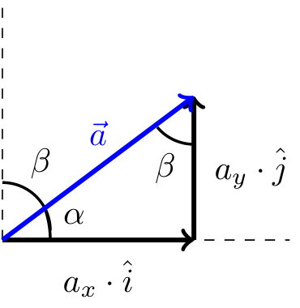
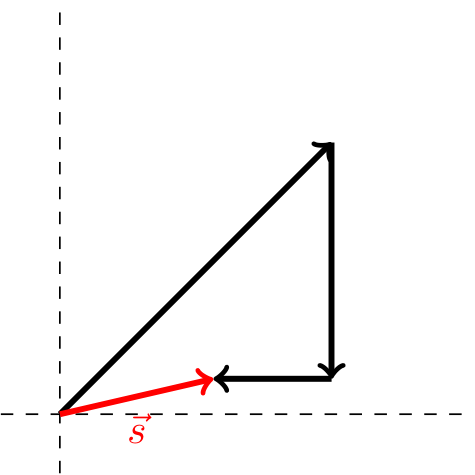

Definizione - Grandezza scalare
Una grandezza scalare è una grandezza che è definita da:
- un numero;
- un'unità di misura.
Definizione - Grandezza vettoriale
Una grandezza vettoriale è una grandezza che è definita da:
- tre numeri;
- un'unità di misura;
- un numero;
- una direzione;
- un verso;
- un'unità di misura.
Definizione - Grandezze tensoriali
Una grandezza tensoriale è una grandezza che è definita da:
- da più di tre numeri;
- un'unità di misura.
Definizione - Vettore nel piano
Per descrivere le grandezze vettoriali, risulta utile utilizzare i vettori.
I vettori (in due dimensioni) sono solitamente rappresentati come segmenti orientati
Un generico vettore libero è uguale ad un altro se e solo se il suo modulo, la sua direzione e il suo verso sono uguali. Nel caso di un vettore applicato, si ha che anche l'origine deve essere uguale.
I vettori (in due dimensioni) sono solitamente rappresentati come segmenti orientati
Un generico vettore \( \vec{v}\) è definito da:
- un modulo (o intensità) \( \mid \vec{v} \mid\);
- una direzione, ovvero la retta su cui il vettore giace;
- un verso.
- \( A\) come l'origine del vettore;
- \( B\) come l'estremo libero.
Un generico vettore libero è uguale ad un altro se e solo se il suo modulo, la sua direzione e il suo verso sono uguali. Nel caso di un vettore applicato, si ha che anche l'origine deve essere uguale.
Definizione - Algebra dei vettori
I vettori liberi sono caratterizzati da un'algebra. Si definiscono infatti:
- l'operazione di somma tra due vettori, ovvero \[ \vec{a} + \vec{b} = \vec{c} \]
- l'operazione di prodotto per uno scalare, ovvero \[ \lambda \cdot \vec{a} = \vec{c} \qquad \forall \lambda \in \mathbb{R} \]
- l'operazione di prodotto scalare (prodotto esterno), ovvero \[ \vec{a} \bullet \vec{b} = \lambda \qquad \lambda \in \mathbb{R} \]
- l'operazione di prodotto vettoriale (prodotto interno), ovvero \[ \vec{a} \wedge \vec{b} = \vec{c} \]
Definizione - Somma tra vettori
Considerando due vettori liberi \( \vec{a} = \overline{AB}\) e \( \vec{b} = \overline{CD}\)
si ha che il vettore somma \( \vec{c} = \vec{a} + \vec{b}\) è il vettore libero ottenuto sovrapponendo all'estremo libero del primo l'origine del primo, ovvero
Per la somma vale:
- la proprietà commutativa, ovvero \[ \vec{a} + \vec{b} = \vec{b} + \vec{a} \]
- la proprietà associativa, ovvero \[ \vec{a} + ( \vec{b} + \vec{c} ) = (\vec{a} + \vec{b} ) + \vec{c} \]
Definizione - Prodotto per uno scalare
Considerando un numero reale \( \lambda\) e un vettore libero \( \vec{v}\), si ha che:
- se \( \lambda \geq 0\), si ha che il vettore risultato avrà stesso verso e direzione e modulo pari a \( \left| \lambda \right| \cdot \mid \vec{v} \mid\);
- se \( \lambda \lt 0\), si ha che il vettore risultato avrà verso opposto e modulo pari al vettore \( (-\lambda) \cdot \vec{v}\).
- la proprietà associativa rispetto agli scalari, ovvero \[ a \cdot (b \cdot \vec{v}) = (a \cdot b) \cdot \vec{v} \qquad \forall a, b \in \mathbb{R} \]
- la proprietà distributiva rispetto agli scalari, ovvero \[ (a + b) \cdot \vec{v} = a \cdot \vec{v} + b \cdot \vec{v} \qquad \forall a, b \in \mathbb{R} \]
- la proprietà distributiva rispetto ai vettori, ovvero \[ \lambda \cdot (\vec{a} + \vec{b}) = \lambda \cdot \vec{a} + \lambda \cdot \vec{b} \qquad \forall \lambda \in \mathbb{R} \]
Definizione - Versore
Un versore \( \hat{u}\) è un vettore con modulo pari uguale a \( 1\).
Per definizione, il versore associato ad un vettore \( \vec{u}\) è uguale a \[ \hat{u} = \frac{\vec{u}}{\mid \vec{u} \mid} \]
Per definizione, il versore associato ad un vettore \( \vec{u}\) è uguale a \[ \hat{u} = \frac{\vec{u}}{\mid \vec{u} \mid} \]
Definizione - Differenza tra vettori
Considerando due vettori liberi \( \vec{a} = \overline{AB}\) e \( \vec{b} = \overline{CD}\) si ha che il vettore differenza \( \vec{c} = \vec{a} - \vec{b}\) (uguale al vettore \( \vec{a} + ((-1) \cdot \vec{b})\)) è il vettore libero ottenuto sovrapponendo le due origini e congiungendo l'estremo libero del primo, all'estremo libero del secondo, ovvero
si ha che il vettore differenza \( \vec{c} = \vec{a} - \vec{b}\) (uguale al vettore \( \vec{a} + ((-1) \cdot \vec{b})\)) è il vettore libero ottenuto sovrapponendo le due origini e congiungendo l'estremo libero del primo, all'estremo libero del secondo, ovvero
Definizione - Prodotto scalare
Considerando due vettori \( \vec{a}\) e \( \vec{b}\) "separati" da un angolo \( \theta\)
Per il prodotto scalare vale
si indica come prodotto scalare la lunghezza della proiezione ortogonale di \( \vec{a}\) su \( \vec{b}\). In formule si avrebbe \[ \vec{a} \bullet \vec{b} = \ \mid \vec{a} \mid \cdot \mid \vec{b} \mid \cdot \cos(\theta) \] Nel caso i due vettori siano ortogonali tra loro (\( \theta = 90^\circ\)), si ha che il risultato del prodotto scalare è \( 0\).
Per il prodotto scalare vale
- la proprietà commutativa, ovvero \[ \vec{a} \bullet \vec{b} = \vec{b} \bullet \vec{a} \]
- la proprietà distributiva sulla somma, ovvero \[ \vec{a} \bullet (\vec{b} + \vec{c}) = \vec{a} \bullet \vec{b} + \vec{a} \bullet \vec{c} \]
- la proprietà associativa per il prodotto per uno scalare, ovvero \[ \lambda \cdot (\vec{a} \bullet \vec{b}) = (\lambda \cdot \vec{a}) \bullet \vec{b} = \vec{a} \bullet (\lambda \cdot \vec{b}) \]
Definizione - Modulo di un vettore
Considerando un vettore \( \vec{v}\), si definisce il suo modulo uguale a \[ \mid \vec{v} \mid \ = \sqrt{\vec{v} \bullet \vec{v}} \] in quanto \[ \vec{v} \bullet \vec{v} = \ \mid \vec{v} \mid^2 \cdot \cos 0 \]
Definizione - La componente
Considerando un vettore \( \vec{v}\) e una direzione rappresentata da un versore \( \hat{u}\), si definisce la componente \( v_u\) (\( \in \mathbb{R}\)) la lunghezza della proiezione di \( \vec{v}\) su \( \hat{u}\).
In formule si ha quindi che \[ v_u = \vec{v} \bullet \hat{u} = \ \mid \vec{v} \mid \cdot \overbrace{\mid \hat{u} \mid}^1 \cdot \cos(\theta) = \ \mid \vec{v} \mid \cdot \cos(\theta) \]
In formule si ha quindi che \[ v_u = \vec{v} \bullet \hat{u} = \ \mid \vec{v} \mid \cdot \overbrace{\mid \hat{u} \mid}^1 \cdot \cos(\theta) = \ \mid \vec{v} \mid \cdot \cos(\theta) \]
Definizione - Il componente
Considerando un vettore \( \vec{v}\) e una direzione rappresentata da un versore \( \hat{u}\), si definisce il componente \( \vec{v}_u\) il vettore di direzione \( \hat{u}\) e di modulo la componente \( v_u\).
In formule si ha quindi che \[ \vec{v}_u = v_u \cdot \hat{u} \]
In formule si ha quindi che \[ \vec{v}_u = v_u \cdot \hat{u} \]
Definizione - Prodotto vettoriale
Considerando due vettori \( \vec{a}\) e \( \vec{b}\) "separati" da un angolo \( \theta\), si definisce prodotto vettoriale \( \vec{a} \wedge \vec{b}\) il vettore \( \vec{c}\) caratterizzato da:
- modulo uguale a \[ \mid \vec{c} \mid \ = \ \mid \vec{a} \mid \cdot \mid \vec{b} \mid \cdot \sin(\theta) \]
- direzione ortogonale ai vettori \( \vec{a}\) e \( \vec{b}\);
- verso secondo la regola della mano destra (presa la mano destra, si fa coincidere il primo vettore con il pollice, il secondo con l'indice e si ha che il verso è quello indicato dal medio).
Per il prodotto vettoriale vale:
- la proprietà anticommutativa, ovvero \[ \vec{a} \wedge \vec{b} = -\vec{b} \wedge \vec{a} \]
- la proprietà distributiva rispetto alla somma, ovvero \[ (\vec{a} + \vec{b}) \wedge \vec{c} = \vec{a} \wedge \vec{c} + \vec{b} \wedge \vec{c} \]
Definizione - Sistema di riferimento
I vettori sono entità astratte, indipendenti dalla rappresentazione.
Per comodità, si rappresentano rispetto ad un sistema di riferimento, composto da un punto privilegiato detto origine e da un insieme di vettori di base (la cui combinazione può creare un qualsiasi vettore).
Per comodità, si rappresentano rispetto ad un sistema di riferimento, composto da un punto privilegiato detto origine e da un insieme di vettori di base (la cui combinazione può creare un qualsiasi vettore).
Definizione - Sistema di riferimento in uno spazio unidimensionale
Considerando uno spazio unidimensionale, ogni vettore \( \vec{a}\) può espresso come uno scalare (il suo modulo) moltiplicato per il versore direzione di un asse \( \hat{u}\), ovvero \[ \vec{a} = a_u \cdot \hat{u} \qquad \text{con} \ a_u = \vec{a} \bullet \hat{u} \]
Definizione - Sistema di riferimento in uno spazio bidimensionale
Considerando uno spazio bidimensionale, ogni vettore \( \vec{a}\) può essere espresso rispetto a due assi \( x\) e \( y\) (di direzione \( \hat{i}, \hat{j}\)) ortogonali tra loro (\( \hat{i} \bullet \hat{j} = 0\)). ottenendo quindi che \[ a_x = \vec{a} \bullet \hat{i} = \ \mid \vec{a} \mid \cdot \cos(\alpha) \] e che \[ a_y = \vec{a} \bullet \hat{j} = \ \mid \vec{a} \mid \cdot \cos(\beta) = \ \mid \vec{a} \mid \cdot \sin(\alpha) \]
Considerando ciò, si avrebbe che \( \vec{a}\) è uguale a
ovvero \[ \vec{a} = a_x \cdot \hat{i} + a_y \cdot \hat{j} \] Considerando sempre questa rappresentazione, è possibile esprimere \( a_x\) e \( a_y\) rispetto agli angoli \( \alpha\) (angolo tra \( \vec{a}\) e \( \hat{i}\)) e \( \beta\) (angolo tra \( \vec{a}\) e \( \hat{j}\)), ovvero

Osservazioni personali - Notazione cartesiana sintetica
Un'altra notazione di un vettore \( \vec{a}\) rispetto a questo sistema di riferimento bidimensionale, è il seguente \[ \vec{a} = a_x \cdot \hat{i} + a_y \cdot \hat{j} \quad \iff \quad \vec{a} = (a_x, a_y) \]
Definizione - Sistema di riferimento in uno spazio tridimensionale
Considerando uno spazio tridimensionale, ogni vettore \( \vec{a}\) può essere espresso rispetto a tre assi \( x\), \( y\) e \( z\) (di direzione \( \hat{i}, \hat{j}, \hat{k}\)) ortogonali tra loro (\( \hat{i} \bullet \hat{j} = 0\) e \( \hat{i} \wedge \hat{j} = \hat{k}\)).
Considerando ciò, si avrebbe che \( \vec{a}\) è uguale a
ovvero \[ \vec{a} = a_x \cdot \hat{i} + a_y \cdot \hat{j} + a_z \cdot \hat{k} \]
Osservazioni personali - Notazione cartesiana sintetica
Un'altra notazione di un vettore \( \vec{a}\) rispetto a questo sistema di riferimento tridimensionale, è il seguente \[ \vec{a} = a_x \cdot \hat{i} + a_y \cdot \hat{j} + a_z \cdot \hat{k} \quad \iff \quad \vec{a} = (a_x, a_y, a_z) \]
Definizione - Operazioni nella rappresentazione cartesiana
Le operazioni in rappresentazione cartesiana sono così caratterizzate:
- la somma di due vettori è uguale alla somma delle componenti, ovvero \[ \begin{array}{ccl} \vec{a} + \vec{b} & = & (a_x \cdot \hat{i} + a_y \cdot \hat{j} + a_z \cdot \hat{k}) + (b_x \cdot \hat{i} + b_y \cdot \hat{j} + b_z \cdot \hat{k}) \\ & = & (a_x + b_x) \cdot \hat{i} + (a_y + b_y) \cdot \hat{j} + (a_z + b_z) \cdot \hat{k} \\ & = & c_x \cdot \hat{i} + c_y \cdot \hat{j} + c_z \cdot \hat{k} \end{array} \]
- il prodotto scalare di due vettori è uguale alla somma del prodotto delle componenti, ovvero \[ \begin{array}{cclc} \vec{a} \bullet \vec{b} & = & (a_x \cdot \hat{i} + a_y \cdot \hat{j} + a_z \cdot \hat{k}) \bullet (b_x \cdot \hat{i} + b_y \cdot \hat{j} + b_z \cdot \hat{k}) & \\ & = & a_x \cdot b_x \cdot (\hat{i} \bullet \hat{i})+ a_x \cdot b_y \cdot (\hat{i} \bullet \hat{j}) + a_x \cdot b_z \cdot (\hat{i} \bullet \hat{k}) & + \\ & + & a_y \cdot b_x \cdot (\hat{j} \bullet \hat{i}) + a_y \cdot b_y \cdot (\hat{j} \bullet \hat{j}) + a_y \cdot b_z \cdot (\hat{j} \bullet \hat{k}) & + \\ & + & a_z \cdot b_x \cdot (\hat{k} \bullet \hat{i}) + a_z \cdot b_y \cdot (\hat{k} \bullet \hat{j}) + a_z \cdot b_z \cdot (\hat{k} \bullet \hat{k}) & = \\ & = & a_x \cdot b_x + a_y \cdot b_y + a_z \cdot b_z \end{array} \] dato che \( \hat{i} \bullet \hat{i} = 1\) e \( \hat{i} \bullet \hat{j} = 0\), \( \hat{i} \bullet \hat{k} = 0\), eccetera;
- il prodotto vettoriale di due vettori è uguale a \[ \vec{a} \wedge \vec{b} = det \left( \begin{array}{ccc} \hat{i} & \hat{j} & \hat{k} \\ a_x & a_y & a_z \\ b_x & b_y & b_z \end{array} \right) \] in quanto \[ \begin{array}{cclc} \vec{a} \wedge \vec{b} & = & (a_x \cdot \hat{i} + a_y \cdot \hat{j} + a_z \cdot \hat{k}) \wedge (b_x \cdot \hat{i} + b_y \cdot \hat{j} + b_z \cdot \hat{k}) & \\ & = & a_x \cdot b_x \cdot (\hat{i} \wedge \hat{i})+ a_x \cdot b_y \cdot (\hat{i} \wedge \hat{j}) + a_x \cdot b_z \cdot (\hat{i} \wedge \hat{k}) & + \\ & + & a_y \cdot b_x \cdot (\hat{j} \wedge \hat{i}) + a_y \cdot b_y \cdot (\hat{j} \wedge \hat{j}) + a_y \cdot b_z \cdot (\hat{j} \wedge \hat{k}) & + \\ & + & a_z \cdot b_x \cdot (\hat{k} \wedge \hat{i}) + a_z \cdot b_y \cdot (\hat{k} \wedge \hat{j}) + a_z \cdot b_z \cdot (\hat{k} \wedge \hat{k}) & = \\ & = & (a_y \cdot b_z - a_z \cdot b_y) \cdot \hat{i} + (a_z \cdot b_x - a_x \cdot b_z) \cdot \hat{j} + (a_x \cdot b_y - a_y \cdot b_x) \cdot \hat{k} \end{array} \] che è esattamente il determinante della matrice sopra citata.
Esempio - Calcolo di caratterestiche di un vettore
Considerando i vettori \begin{aligned} & \vec{a} = 2 \cdot \hat{i} - \hat{j} + 3 \cdot \hat{k} & \vec{b} = -2 \cdot \hat{i} + \hat{j} - 2 \cdot \hat{k} \end{aligned} calcolare:
- il modulo dei vettori. Per farlo consideriamo che il modulo si calcola come \[ \mid \vec{a} \mid \ = \sqrt{\vec{a} \bullet \vec{a}} \] da cui si ottiene \[ \begin{array}{ccl} \mid \vec{a} \mid & = & \sqrt{(2, -1, 3) \bullet (2,-1,3)} \\ & = & \sqrt{2^2 + (-1)^2 + 3^2} \\ & = & \sqrt{4 + 1 + 9} = \sqrt{14} \end{array} \] e \[ \begin{array}{ccl} \mid \vec{b} \mid & = & \sqrt{(-2, 1, -2) \bullet (-2,1,-2)} \\ & = & \sqrt{(-2)^2 + 1^2 + (-2)^2} \\ & = & \sqrt{4 + 1 + 4} = 3 \end{array} \]
- il prodotto scalare dei due vettori, ovvero \[ \begin{array}{ccl} \vec{a} \bullet \vec{b} & = & (2,-1,3) \bullet (-2, 1, -2) \\ & = & (2 \cdot (-2)) + (-1 \cdot 1) + (3 \cdot (-2)) \\ & = & -4 - 1 - 6 = -11 \end{array} \]
- l'angolo \( \alpha\) compreso tra i due vettori. Per farlo consideriamo che il prodotto scalare è anche calcolato come \[ \vec{a} \bullet \vec{b} = \ \mid \vec{a} \mid \cdot \mid \vec{b} \mid \cdot \cos(\alpha) \] e quindi è possibile risolvere la seguente equazione in \( \alpha\) sostituendo i dati calcolati in precedenza \[ \begin{array}{rcl} -11 & = & \sqrt{14} \cdot 3 \cdot \cos(\alpha) \\ -\frac{11}{\sqrt{14} \cdot 3} & = & \cos(\alpha) \\ \alpha & = & \arccos\left( -\frac{11}{3 \cdot \sqrt{14}} \right) \end{array} \]
Esempio - Vettori e navigazione
Una barca naviga in direzione Nord-Est per \( 15 \mathrm{ \, km }\), successivamente vira in direzione Sud e prosegue per \( 10\mathrm{ \, km }\), quindi vira nuovamente in direzione Ovest e percorre altri \( 5\mathrm{ \, km }\). Trovare la distanza percorsa e la distanza dal punto di partenza.
Innanzitutto visualizziamo il percorso: che ha modulo \[ \begin{array}{ccl} \mid \vec{s} \mid & = & \sqrt{\left(\frac{15}{\sqrt{2}} - 10 \right)^2 + \left(\frac{15}{\sqrt{2}} - 5 \right)^2 } \\ & \approxeq & 5.64 \mathrm{ \, km } \end{array} \]
Innanzitutto visualizziamo il percorso:
Calcolare la distanza totale percorsa è semplice, si ha infatti che \[ d = 15 \mathrm{ \, km } + 10 \mathrm{ \, km } + 5 \mathrm{ \, km } = 35\mathrm{ \, km } \] A questo punto, considerando i versori \( \hat{i}\) e \( \hat{j}\), si ha che
- \( -\hat{i}\) indica la direzione Sud;
- \( -\hat{j}\) indica la direzione Ovest;
- per trovare il versore direzione Nord-Est \( \hat{ne}\), consideriamo che è il vettore somma tra diviso per il suo modulo \[ \hat{ne} = \frac{\hat{i} + \hat{j}}{\mid \hat{i} + \hat{j} \mid} = \frac{\hat{i} + \hat{j}}{\sqrt{1 + 1}} = \frac{1}{\sqrt{2}} \cdot \hat{i} + \frac{1}{\sqrt{2}} \cdot \hat{j} \]
